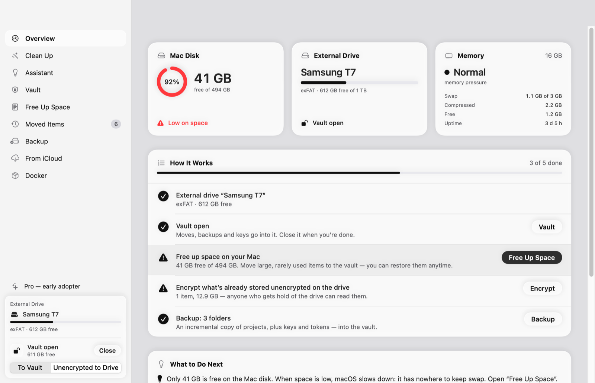
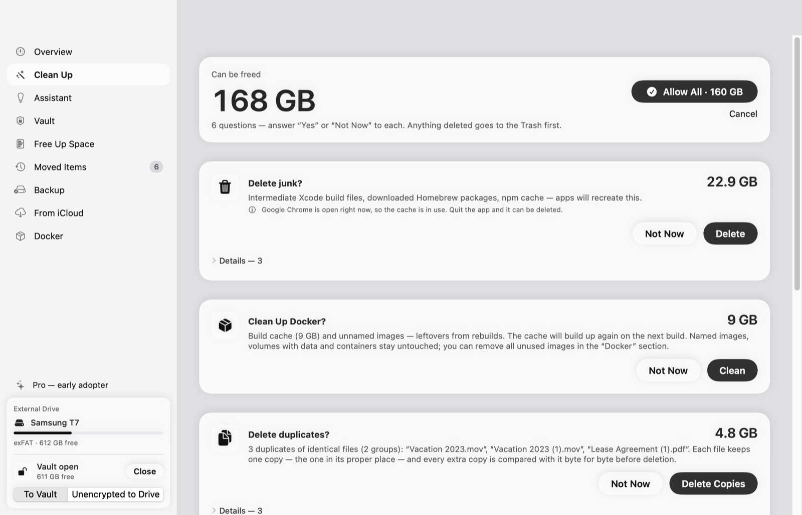

Free up space on your Mac.
Lose nothing.
OffLoadAI moves big, rarely used folders into an encrypted vault on an external drive, cleans caches and Docker leftovers, and backs up your projects and keys. It verifies every copy before it deletes the original.
Install on Mac — one command in Terminal:
curl -fsSL https://raw.githubusercontent.com/audit0/Offload/main/scripts/install.sh | zsh
Free · macOS 14+ · no sign-up · open source (MIT)

The original is deleted only after the copy has been re-read from disk and matched it byte for byte.
- Copy to the vault or the external drive.
- Verify: the copy is re-read from disk and its SHA-256 is compared with the original.
- Check that the original didn’t change while it was being copied.
- Delete the original. You can restore everything at any time, on any Mac.
Press “Start” and answer “Yes” or “Not Now”
No digging through folders. OffLoadAI sorts what it finds into simple questions and shows how much space each one frees.
Encrypted vault
An AES-256 disk image on an external drive. Only you know the password. The vault closes by itself on sleep, screen lock and idle.
Junk cleanup
Xcode, Homebrew, npm, pip, Cargo, Gradle, browser and IDE caches, old installers. Everything goes to the Trash first and can be put back.
Docker
Build cache and unnamed images. Volumes with data are left alone — you can pack them into the vault with verification.
Projects and keys backup
An incremental copy of your projects without node_modules. ~/.ssh, .env, tokens and keys go only into the vault.
Habits
OffLoadAI learns from your answers — on this Mac only, offline — and files similar items into the right question.
AI assistant
Tells you what’s important in a folder and what’s junk. Works with Claude Code, your API key or a local Ollama model. Deletes only what the rules allow.
See it in action

Questions about what was found: delete junk, clean up Docker, delete duplicates.
What OffLoadAI won’t let you break
These rules come from real cases where simply moving a folder broke something.
- Virtual machines and media libraries (UTM, Photos) are never moved — the app would lose track of them.
- App data in
~/Library,~/.sshand~/.configis left alone. - Open files aren’t moved while an app is holding them.
- Permissions on exFAT are saved next to the archive and restored when you bring files back.
- Quitting mid-copy never leaves half-copied hidden folders on the drive.
- Docker: OffLoadAI watches
Docker.rawand stops if it starts to grow.
Everything your data needs is free
Pro never stands between you and your files: putting data somewhere safe and bringing it back is free forever.
OffLoadAI
- Vault: create, change password, header backup
- Verified moves to the vault and restore
- Clean Up: junk, Docker, installers, large items
- Keys and tokens into the vault
- Restore from restic backups in iCloud
OffLoadAI Pro
- Everything in the free version
- Duplicates: identical files found by SHA-256
- Habits: similar items land in the right question
- Projects backup: an incremental copy into the vault
- Docker volumes to the vault: packed with verification
14 days of Pro free from first launch, no key or sign-up. A year of updates, renewal at half price. One key for all your Macs and PCs. 14-day refund.
Payment: Telegram Stars or crypto (USDT, TON). The key arrives in the bot right after payment and is checked offline.
There’s a Windows version
The same sections and rules. The vault is a BitLocker-encrypted VHDX image (Windows Pro required). One Pro key works on both systems. The Windows interface is in Russian for now. Install with one command in PowerShell:
irm https://raw.githubusercontent.com/audit0/Offload/main/windows/scripts/install.ps1 | iex
Windows 10 or 11, x64 or ARM. No admin rights needed. No separate .NET install.
FAQ
Where do my files and data go?
Nowhere. OffLoadAI works without servers and has no telemetry. The Pro key is verified by its signature right on your computer. Only two things go online, and only if you turn them on: the AI assistant when you ask it, and the new-version check.
macOS says it can’t verify the developer
The app isn’t notarized by Apple yet. Install it with the Terminal command and there’s no warning. If you downloaded the DMG, open System Settings → Privacy & Security and click “Open Anyway”.
What if I forget the vault password?
Then the data in the vault can’t be recovered: only you know the password, and OffLoadAI doesn’t store it. Keep it in a password manager. OffLoadAI backs up the vault header for you.
How is this different from CleanMyMac?
OffLoadAI doesn’t just delete — it moves things to an external drive, into an encrypted vault, verifying every file. Anything moved comes back with one click. It knows developer pitfalls (Docker, Xcode, virtual machines, keys) and works fully offline.
Do I need an external drive?
For the vault and moving — yes, any will do: SSD, flash drive, or an exFAT disk. Cleaning junk, caches and Docker works without one.
Can I read the code?
Yes, all of it is open on GitHub under the MIT license. The threat model and known limitations are in SECURITY.md.
Try it on your Mac
A couple of minutes to install, and you’ll see how much space you can get back.